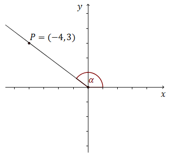

Różne zadania z trygonometrii
W tym nagraniu wideo omawiam typowe zadanie z trygonometrii, w którym mamy daną
wartość jednej funkcji trygonometrycznej, a musimy policzyć wartości wszystkich pozostałych funkcji
trygonometrycznych.
Zadania tego typu można rozwiązywać na kilka różnych sposobów - np. korzystając z twierdzenia Pitagorasa, albo jedynki trygonometrycznej. Plusy i minusy każdej z tych metod omawiam w tym nagraniu wideo.
Zadania tego typu można rozwiązywać na kilka różnych sposobów - np. korzystając z twierdzenia Pitagorasa, albo jedynki trygonometrycznej. Plusy i minusy każdej z tych metod omawiam w tym nagraniu wideo.
Czas nagrania: 13 min.
Kąt \(\alpha \) jest ostry i \(\cos \alpha =\frac{3}{4}\). Wtedy \(\sin \alpha \)
jest równy
A.\( \frac{1}{4} \)
B.\( \frac{\sqrt{3}}{4} \)
C.\( \frac{\sqrt{7}}{4} \)
D.\( \frac{7}{16} \)
C
Kąt \(\alpha \) jest ostry i \(\cos \alpha =\frac{3}{7}\). Wtedy
A.\( \sin \alpha =\frac{2\sqrt{10}}{7} \)
B.\( \sin \alpha =\frac{\sqrt{10}}{7} \)
C.\( \sin \alpha =\frac{4}{7} \)
D.\( \sin \alpha =\frac{3}{4} \)
A
Sinus kąta ostrego \(\alpha \) jest równy \(\frac{3}{7}\). Wówczas cosinus tego
kąta jest równy:
A.\( \frac{4}{7} \)
B.\( \frac{7}{4} \)
C.\( \frac{2\sqrt{7}}{7} \)
D.\( \frac{2\sqrt{10}}{7} \)
D
Kąt \( \alpha \) jest ostry i \( \sin \alpha =\frac{1}{4}
\). Wówczas
A.\(\cos \alpha \lt \frac{3}{4} \)
B.\(\cos \alpha =\frac{3}{4} \)
C.\(\cos \alpha =\frac{\sqrt{13}}{4} \)
D.\(\cos \alpha >\frac{\sqrt{13}}{4} \)
D
Kąt \(\alpha\) jest ostry i \(\sin{\alpha}=\frac{4}{5}\). Wtedy \(\cos{\alpha }\)
jest równy
A.\( \frac{1}{5} \)
B.\( \frac{2}{5} \)
C.\( \frac{3}{5} \)
D.\( \frac{4}{5} \)
C
Kąt \(\alpha\) jest ostry i \(\cos \alpha = \frac{3}{4}\). Wtedy \(\sin \alpha\)
jest równy
A.\( \frac{1}{4} \)
B.\( \frac{\sqrt{7}}{4} \)
C.\( \frac{7}{16} \)
D.\( \frac{\sqrt{7}}{16} \)
B
Kąt \(\alpha \) jest ostry i \(\cos \alpha =\frac{5}{13}\). Wtedy
A.\( \sin \alpha =\frac{12}{13} \) oraz \(\operatorname{tg} \alpha =\frac{12}{5}\)
B.\( \sin \alpha =\frac{12}{13} \) oraz \(\operatorname{tg} \alpha =\frac{5}{12}\)
C.\( \sin \alpha =\frac{12}{5} \) oraz \(\operatorname{tg} \alpha =\frac{12}{13}\)
D.\( \sin \alpha =\frac{5}{12} \) oraz \(\operatorname{tg} \alpha =\frac{12}{13}\)
A
Kąt \(\alpha \) jest ostry i \(\cos \alpha =\frac{4}{5}\). Oblicz \(\sin \alpha \)
i \(\operatorname{tg} \alpha \).
\(\sin \alpha =\frac{3}{5}\), \(\operatorname{tg} \alpha =\frac{3}{4}\)
Kąt \(\alpha\) jest ostry i \(\sin\alpha =\frac{\sqrt{2}}{2} \). Wtedy
\(\operatorname{tg}\alpha\) jest równy
A.\( \frac{\sqrt{2}}{2} \)
B.\( \frac{2}{\sqrt{2}} \)
C.\( \sqrt{2} \)
D.\( 1 \)
D
Kąt \(\alpha \) jest ostry oraz \(\sin \alpha =\frac{2}{5}\). Wówczas
A.\( \cos \alpha =\sin \alpha \)
B.\( \cos \alpha >\sin \alpha \)
C.\( \cos \alpha \lt \sin \alpha \)
D.\( \cos \alpha =1-\sin \alpha \)
B
Kąt \(\alpha \) jest ostry i \(\sin \alpha =0{,}6\). Wówczas
A.\( \cos \alpha =0{,}8 \) i \(\operatorname{tg} \alpha
=0{,}4\)
B.\( \cos \alpha =0{,}4 \) i \(\operatorname{tg} \alpha
=1{,}5\)
C.\( \cos \alpha =0{,}8 \) i \(\operatorname{tg} \alpha
=0{,}75\)
D.\( \cos \alpha =0{,}4 \) i \(\operatorname{tg} \alpha
=0{,}75\)
C
Kąt \(\alpha \) jest ostry i \(\sin \alpha =\frac{7}{13}\). Wtedy
\(\operatorname{tg} \alpha \) jest równy
A.\( \frac{7}{6} \)
B.\( \frac{7\cdot 13}{120} \)
C.\( \frac{7}{\sqrt{120}} \)
D.\( \frac{7}{13\sqrt{120}} \)
C
Kąt \(\alpha \) jest ostry i \(\operatorname{tg} \alpha =\frac{12}{5}\). Wówczas
\(\cos \alpha \) jest równy:
A.\( \frac{5}{12} \)
B.\( \frac{5}{13} \)
C.\( \frac{10}{13} \)
D.\( \frac{12}{13} \)
B
Kąt \(\alpha \) jest ostry i \(\operatorname{tg} \alpha =\frac{5}{12}\). Oblicz
\(\cos \alpha \).
\(\cos \alpha =\frac{12}{13}\)
Przyprostokątne trójkąta prostokątnego mają długości \(3\) i \(9\). Sinus
najmniejszego kąta tego trójkąta jest równy:
A.\( \frac{3\sqrt{10}}{10} \)
B.\( \frac{1}{3} \)
C.\( \frac{\sqrt{10}}{10} \)
D.\( \frac{\sqrt{10}}{30} \)
C
Kąt \(\alpha \) jest ostry i \(\operatorname{tg} \alpha
=2\). Oblicz \(\frac{\sin \alpha -\cos \alpha }{\sin \alpha +\cos
\alpha }\).
\(\frac{1}{3}\)
Przyprostokątne trójkąta prostokątnego mają długości \(8\) i \(6\). Sinus większego
z kątów ostrych tego trójkąta jest równy
A.\( \frac{3}{5} \)
B.\( \frac{3}{4} \)
C.\( \frac{4}{5} \)
D.\( \frac{4}{3} \)
C
W trójkącie równoramiennym wysokość jest dwa razy dłuższa od podstawy. Wynika stąd,
że sinus kąta przy podstawie wynosi:
A.\( \frac{\sqrt{17}}{17} \)
B.\( \frac{\sqrt{5}}{5} \)
C.\( \frac{4\sqrt{17}}{17} \)
D.\( \frac{1}{17} \)
C
Liczba \(\sin 60^\circ +\cos 60^\circ \) jest równa
A.\( 1 \)
B.\( -\frac{\sqrt{3}}{2} \)
C.\( \frac{\sqrt{3}+1}{2} \)
D.\( \frac{2\sqrt{3}-3}{6} \)
C
Liczba \( \operatorname{tg} 30^\circ -\sin 30^\circ \) jest równa
A.\(\sqrt{3}-1 \)
B.\(-\frac{\sqrt{3}}{6} \)
C.\(\frac{\sqrt{3}-1}{6} \)
D.\(\frac{2\sqrt{3}-3}{6} \)
D
Kąt \(\alpha \) jest ostry i \(\sin \alpha =\frac{3}{4}\). Wartość wyrażenia \(2-\cos ^2\alpha \) jest równa
A.\( \frac{25}{16} \)
B.\( \frac{3}{2} \)
C.\( \frac{17}{16} \)
D.\( \frac{31}{16} \)
A
Kąt \(\alpha \) jest ostry i \(\operatorname{tg} \alpha =1\). Wówczas
A.\( \alpha \lt 30^\circ \)
B.\( \alpha =30^\circ \)
C.\( \alpha =45^\circ \)
D.\( \alpha >45^\circ \)
C
Kąt \(\alpha \) jest ostry i \(\sin\alpha = 0{,}75\). Wówczas
A.\( \alpha \lt 30^\circ \)
B.\( \alpha =30^\circ \)
C.\( \alpha =45^\circ \)
D.\( \alpha >45^\circ \)
D
Kąt \(\alpha \) jest ostry oraz \(\sin \alpha =\cos 47^\circ \). Wtedy miara kąta
\(\alpha \) jest równa.
A.\( 6^\circ \)
B.\( 33^\circ \)
C.\( 47^\circ \)
D.\( 43^\circ \)
D
Kąt \( \alpha \) jest kątem ostrym i \( \operatorname{tg} \alpha =\frac{1}{2} \).
Jaki warunek spełnia kąt \( \alpha \)?
A.\(\alpha \lt 30^\circ \)
B.\(\alpha =30^\circ \)
C.\(\alpha =60^\circ \)
D.\(\alpha >60^\circ \)
A
W trójkącie prostokątnym \( ABC \) odcinek \( AB \) jest przeciwprostokątną i \(
|AB|=13 \) oraz \( |BC|=12 \) . Wówczas sinus kąta \( ABC \) jest równy.
A.\(\frac{12}{13} \)
B.\(\frac{5}{13} \)
C.\(\frac{5}{12} \)
D.\(\frac{13}{12} \)
B
Kąt \(\alpha \) jest ostry i \(\sin \alpha =\frac{\sqrt{3}}{2}\). Wartość wyrażenia
\(\cos^2\alpha -2\) jest równa
A.\( -\frac{7}{4} \)
B.\( -\frac{1}{4} \)
C.\( \frac{1}{2} \)
D.\( \frac{\sqrt{3}}{2} \)
A
Kąt \(\alpha \) jest ostry i \(\cos \alpha =0{,}9\). Wówczas
A.\( \alpha \lt 30^\circ \)
B.\( \alpha =30^\circ \)
C.\( \alpha =45^\circ \)
D.\( \alpha >45^\circ \)
A
Kąt \(\alpha \) jest ostry i \(\sin \alpha =0{,}8\). Wówczas
A.\( \alpha \lt 30^\circ \)
B.\( \alpha =30^\circ \)
C.\( \alpha =45^\circ \)
D.\( \alpha >45^\circ \)
D
Kąt \(\alpha \) jest ostry i \(\sin \alpha = \cos \alpha \). Wówczas
A.\( \alpha =30^\circ \)
B.\( \alpha =45^\circ \)
C.\( \alpha =60^\circ \)
D.\( \alpha =90^\circ \)
B
Wartość wyrażenia \(\sin^{2} 23^\circ +\sin^{2} 67^\circ \) jest równa:
A.\( 2\sin^{2} 23^\circ \)
B.\( 2\sin^{2} 67^\circ \)
C.\( 1 \)
D.\( 0 \)
C
Kąt \(\alpha \) jest ostry i \(\sin \alpha =\frac{\sqrt{3}}{2}\). Oblicz wartość
wyrażenia \(\sin^2\alpha - 3\cos^2\alpha \).
\(0\)
Kąt \(\alpha \) jest ostry i \(\sin \alpha =\frac{1}{4}\). Oblicz \(3 +
2\operatorname{tg}^2\alpha \).
\(3\frac{2}{15}\)
Oblicz wartość wyrażenia \(\operatorname{tg}^2\alpha -3\cos ^2\alpha \), jeżeli
\(\sin \alpha =\frac{\sqrt{3}}{2}\) i \(\alpha \) jest kątem ostrym.
\(2\frac{1}{4}\)
Kąty ostre \(\alpha \) i \(\beta \) trójkąta prostokątnego spełniają warunek \(\sin^{2} \alpha +\sin^{2}\beta +\operatorname{tg}^{2}\alpha =4\) . Wyznacz
miarę kąta \(\alpha \).
\(\alpha =60^\circ \)
W trójkącie prostokątnym, w którym przyprostokątne mają długości \(2\) i \(4\),
jeden z kątów ostrych ma miarę \(\alpha \). Oblicz \(\sin \alpha \cdot \cos
\alpha \).
\(\frac{2}{5}\)
W trójkącie prostokątnym przyprostokątne mają długość \(a\) i \(b\), zaś naprzeciw
boku \(a\) znajduje się kąt ostry \(\alpha\). Wykaż, że jeśli \(\operatorname{tg}
\alpha = 2,\) to:\[\frac{(a+b)\cdot b}{a^2-b^2}=1\]
Uzasadnij, że jeżeli \(\alpha\) jest kątem ostrym, to \(\sin^4\alpha + \cos^2\alpha
= \sin^2\alpha + \cos^4\alpha\).
Kąt \(\alpha \) jest ostry i \(\sin \alpha =\frac{1}{4}\). Oblicz \(3+2\operatorname{tg}^2\alpha \).
\(\frac{47}{15}\)
W trójkącie prostokątnym jedna z przyprostokątnych ma długość \(a\). Kąt ostry przy
tym boku ma miarę \(\alpha \). Wykaż, że \(\sin \alpha +\cos \alpha >1\).
Kąt \(\alpha \) jest ostry i \(\frac{\sin \alpha }{\cos \alpha }+\frac{\cos \alpha
}{\sin \alpha }=2\). Oblicz wartość wyrażenia \(\cos \alpha \cdot \sin \alpha \).
\(\frac{1}{2}\)
Rozwiąż równanie \(\cos 2x + \cos x + 1 = 0\) dla
\(x\in \langle 0,2\pi \rangle\).
\(x=\frac{\pi }{2}\) lub \(x=\frac{3\pi }{2}\) lub \(x=\frac{2\pi
}{3}\) lub \(x=\frac{4\pi }{3}\)
Rozwiąż równanie \(\cos2x + 2 = 3\cos x\).
\(x=\frac{\pi }{3}+2k\pi \) lub \(x=-\frac{\pi }{3}+2k\pi \) lub
\(x=2k\pi \) gdzie \(k\in \mathbb{Z} \)
Podstawą ostrosłupa \(ABCDS\) jest romb \(ABCD\) o boku długości \(4\). Kąt \(ABC\)
rombu ma miarę \(120^\circ \) oraz \(|AS|=|CS|=10\) i \(|BS|=|DS|\).
Oblicz sinus kąta nachylenia krawędzi \(BS\) do płaszczyzny podstawy ostrosłupa.
\(\sin \alpha =\sqrt{\frac{22}{23}}\)
Kąt \(\alpha \) jest ostry i \(\sin \alpha
=\frac{\sqrt{3}}{3}\). Wtedy wartość wyrażenia \(2cos^2\alpha
-1\) jest równa
A.\( 0 \)
B.\( \frac{1}{3} \)
C.\( \frac{5}{9} \)
D.\( 1 \)
B
W trójkącie prostokątnym długość jednej z przyprostokątnych jest równa \(7\), zaś
długość przeciwprostokątnej jest równa \(8\). Zatem tangens mniejszego kąta ostrego w tym trójkącie
jest równy:
A.\( \frac{15}{7} \)
B.\( \frac{8}{15} \)
C.\( \frac{\sqrt{15}}{7} \)
D.\( \frac{7\sqrt{15}}{15} \)
C
Maszt telekomunikacyjny rzuca cień, który jest \(2\) razy krótszy niż wysokość
masztu. Oblicz cosinus kąta, pod jakim padają promienie słoneczne.
\(\cos \alpha =\frac{\sqrt{5}}{5}\)
W trójkącie prostokątnym o bokach \(6, 8, 10\), tangens najmniejszego kąta jest
równy
A.\(\frac{3}{4} \)
B.\(1\frac{1}{3} \)
C.\(\frac{3}{5} \)
D.\(\frac{4}{5} \)
A
W trójkącie prostokątnym najdłuższy bok ma długość \(25\), a najkrótszy \(7\).
Tangens najmniejszego kąta tego trójkąta jest równy:
A.\(\frac{7}{24} \)
B.\(\frac{24}{7} \)
C.\(\frac{7}{25} \)
D.\(\frac{24}{25} \)
A
Jeżeli \( \alpha \) jest kątem ostrym oraz \( \operatorname{tg}{\alpha
}=\frac{2}{5} \), to wartość wyrażenia \( \frac{3\cos{\alpha }-2\sin{\alpha }}{\sin{\alpha
}-5\cos{\alpha }} \) jest równa
A.\(-\frac{11}{23} \)
B.\(\frac{24}{5} \)
C.\(-\frac{23}{11} \)
D.\(\frac{5}{24} \)
A
Kąt \( \alpha \) jest ostry i spełniona jest równość \( 3\operatorname{tg}\alpha =2
\). Wtedy wartość wyrażenia \( \sin \alpha+\cos \alpha \) jest równa
A.\(1 \)
B.\(\frac{5\sqrt{13}}{26} \)
C.\(\frac{5\sqrt{13}}{13} \)
D.\(\sqrt{5} \)
C
Kąt \( \alpha \) jest ostry oraz \( \frac{4}{\sin^2\!{\alpha
}}+\frac{4}{\cos^2\!{\alpha }}=25 \). Oblicz wartość wyrażenia \( \sin{\alpha }\cdot \cos{\alpha }
\).
\(\frac{2}{5}\)
Dla każdego kąta ostrego \(\alpha \) wyrażenie \(\sin^{2}
\alpha +\sin^{2} \alpha \cdot \cos^{2}\alpha + \cos^{4}\alpha\) jest równe
A.\( 2\sin^{2} \alpha \)
B.\( 2\cos^{2}\alpha \)
C.\( 1 \)
D.\( 2 \)
C
Kąt \(\alpha \) jest ostry i \(\sin \alpha =\frac{1}{3}\). Wartość wyrażenia \(1+\operatorname{tg} \alpha \cdot \cos \alpha \) jest równa
A.\( \frac{4}{3} \)
B.\( \frac{11}{9} \)
C.\( \frac{17}{9} \)
D.\( \frac{11}{3} \)
A
Kosinus kąta ostrego rombu jest równy \(\frac{\sqrt{3}}{2}\), bok rombu ma długość
\(3\). Pole tego rombu jest równe
A.\( \frac{9}{2} \)
B.\( \frac{9\sqrt{3}}{4} \)
C.\( \frac{9\sqrt{3}}{2} \)
D.\( 6 \)
A
Przyprostokątne w trójkącie prostokątnym mają długości \(1\) oraz \(\sqrt{3}\).
Najmniejszy kąt w tym trójkącie ma miarę
A.\( 60^\circ \)
B.\( 30^\circ \)
C.\( 45^\circ \)
D.\( 15^\circ \)
B
Kąt \(\alpha\) jest ostry i \(\cos\alpha =
\frac{\sqrt{7}}{4}\). Oblicz wartość wyrażenia \(2+\sin^3\!\alpha
+\sin\alpha \cdot \cos^2\!\alpha\).
\(2\frac{3}{4}\)
Na płaszczyźnie dane są punkty \( A=( \sqrt{2}, \sqrt{6} ) \text{, }\ B=(0, 0)
\text{ i }\ C=(\sqrt{2}, 0)\) . Kąt \( BAC \) jest równy
A.\(30^\circ \)
B.\(45^\circ \)
C.\(60^\circ \)
D.\(75^\circ \)
A
Liczba \( \sin 150^\circ \) jest równa liczbie
A.\( \cos 60^\circ \)
B.\( \cos 120^\circ \)
C.\( \operatorname{tg} 120^\circ \)
D.\( \operatorname{tg} 60^\circ \)
A
Jeżeli kąt \(\alpha \) jest ostry i \(\operatorname{tg} \alpha =\frac{3}{4}\), to
\(\frac{2-\cos \alpha }{2+\cos \alpha }\) równa się
A.\( -1 \)
B.\( -\frac{1}{3} \)
C.\( \frac{3}{7} \)
D.\( \frac{84}{25} \)
C
W trójkącie, przedstawionym na rysunku poniżej, sinus kąta ostrego \(\alpha \) jest
równy 
A.\( \frac{1}{5} \)
B.\( \frac{\sqrt{6}}{12} \)
C.\( \frac{5}{24} \)
D.\( \frac{2\sqrt{6}}{5} \)
D
W układzie współrzędnych zaznaczono kąt \(\alpha \).  Jedno z ramion kąta \(\alpha \) przechodzi przez punkt
\(P=(-4,3)\). Wtedy:
A.\( \cos \alpha = \frac{4}{5} \)
B.\( \cos \alpha = -\frac{4}{5} \)
C.\( \cos \alpha = -\frac{4}{3} \)
D.\( \cos \alpha = -\frac{3}{4} \)
B
Jeżeli \(0^\circ \lt \alpha \lt 90^\circ \) oraz \(\operatorname{tg} \alpha =2\sin
\alpha \), to
A.\( \cos \alpha =\frac{\sqrt{2}}{2} \)
B.\( \cos \alpha =\frac{1}{2} \)
C.\( \cos \alpha =1 \)
D.\( \cos \alpha =\frac{\sqrt{3}}{2} \)
B
Drabinę o długości \(4\) metrów oparto o pionowy mur, a jej podstawę umieszczono w
odległości \(1{,}30\) m od tego muru (zobacz rysunek).  Kąt \(\alpha \), pod jakim ustawiono drabinę, spełnia warunek
Kąt \(\alpha \), pod jakim ustawiono drabinę, spełnia warunek
Kąt \(\alpha \), pod jakim ustawiono drabinę, spełnia warunek A.\( 0^\circ \lt \alpha \lt 30^\circ \)
B.\( 30^\circ \lt \alpha \lt 45^\circ \)
C.\( 45^\circ \lt \alpha \lt 60^\circ \)
D.\( 60^\circ \lt \alpha \lt 90^\circ \)
D
Kąt \(\alpha \) jest ostry i \(\sin \alpha =\frac{2}{5}\). Wówczas \(\cos \alpha \)
jest równy
A.\( \frac{5}{2} \)
B.\( \frac{\sqrt{21}}{4} \)
C.\( \frac{3}{5} \)
D.\( \frac{\sqrt{21}}{5} \)
D
Równanie \(2\sin x+3\cos x=6\) w przedziale \((0,2\pi )\)
A.nie ma rozwiązań rzeczywistych.
B.ma dokładnie jedno rozwiązanie rzeczywiste.
C.ma dokładnie dwa rozwiązania rzeczywiste.
D.ma więcej niż dwa rozwiązania rzeczywiste.
A
Sinus kąta ostrego \(\alpha \) jest równy \(\frac{3}{4}\). Wówczas
A.\( \cos \alpha =\frac{1}{4} \)
B.\( \cos \alpha =\frac{\sqrt{7}}{4} \)
C.\( \cos \alpha =\frac{7}{16} \)
D.\( \cos \alpha =\frac{\sqrt{13}}{16} \)
B
W trójkącie prostokątnym o długościach przyprostokątnych \(2\) i \(5\) cosinus
większego z kątów ostrych jest równy
A.\( \frac{5}{2} \)
B.\( \frac{2}{5} \)
C.\( \frac{2}{\sqrt{29}} \)
D.\( \frac{5}{\sqrt{29}} \)
C
Kąt \(\alpha \) jest ostry i spełnia równość \(\operatorname{tg} \alpha
+\frac{1}{\operatorname{tg} \alpha }=\frac{7}{2}\). Oblicz wartość wyrażenia \(\sin \alpha \cdot
\cos \alpha \).
\(\frac{2}{7}\)
Kąt \(\alpha \) jest ostry oraz \(3\sin \alpha -\sqrt{3}\cos \alpha =0\). Wtedy
A.\( \operatorname{tg} \alpha =\frac{1}{3} \)
B.\( \operatorname{tg} \alpha =3 \)
C.\( \operatorname{tg} \alpha =\sqrt{3} \)
D.\( \operatorname{tg} \alpha =\frac{\sqrt{3}}{3} \)
D
Kąt \(\alpha \in (0^\circ , 180^\circ )\) oraz wiadomo, że \(\sin \alpha \cdot \cos
\alpha =-\frac{3}{8}\). Wartość wyrażenia \((\cos \alpha -\sin \alpha )^2+2\) jest równa
A.\( \frac{15}{4} \)
B.\( \frac{9}{4} \)
C.\( \frac{27}{8} \)
D.\( \frac{21}{8} \)
Wartość wyrażenia \(2\sin^{2} 18^\circ +\sin^{2} 72^\circ +\cos^{2} 18^\circ \)
jest równa
A.\( 0 \)
B.\( 1 \)
C.\( 2 \)
D.\( 4 \)